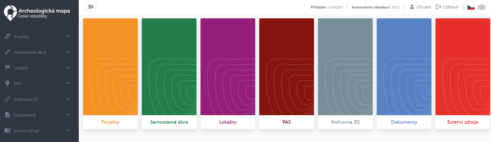
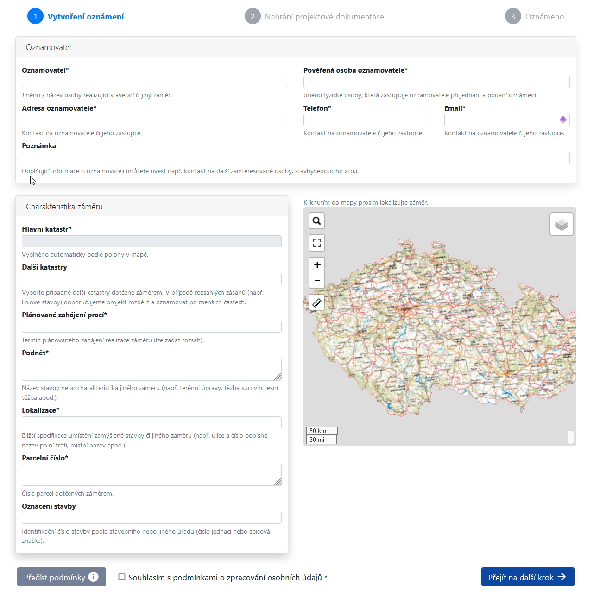
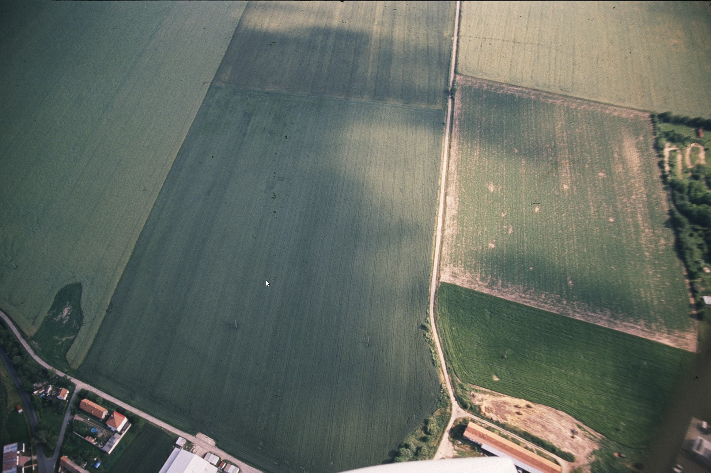
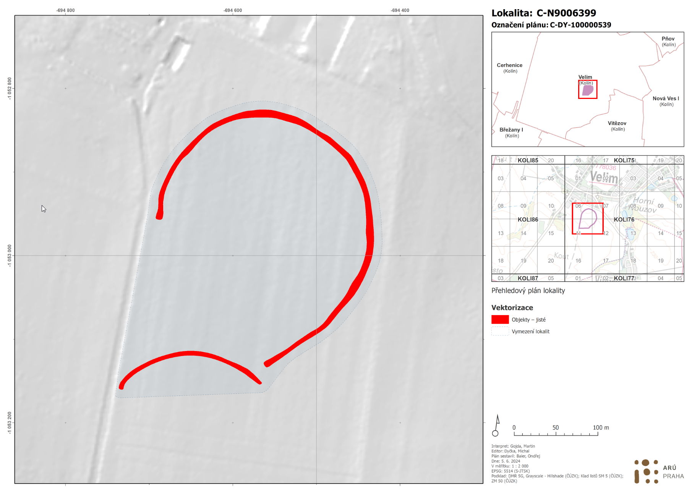
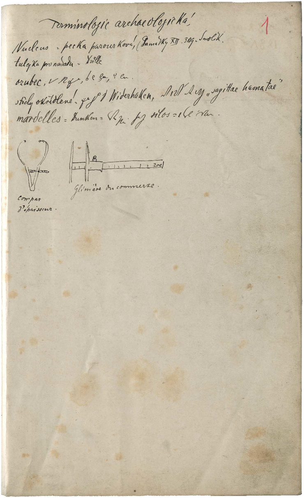

Zpravodaj AMČR č. 11
Vážení uživatelé AMČR,
přinášíme Vám zpravodaj AMČR č. 11, který je spjat zejména se spuštěním nové webové aplikace AMČR, ale přináší i další novinky z Archeologického informačního systému České republiky (AIS CR).
Váš tým AIS CR…
Spuštění nové AMČR
Dne 4. 8. 2024 byla spuštěna nová podoba Archeologické mapy České republiky (AMČR), která přesouvá práci plně do webového prostředí. Starý desktopový klient byl 12. 7. 2024 odstaven a již nebude nadále přístupný. Nová AMČR si v maximální možné míře zachovává rozdělení do jednotlivých modulů, na které jste byli zvyklí z desktopového klienta, aby byla orientace v novém prostředí co nejsnazší. Formuláře pro jednotlivé moduly jsou však přizpůsobeny webovému prostředí.
Webovou aplikaci naleznete na stránce https://amcr.aiscr.cz/.

K nové aplikaci vznikla webová stránka s popisem jejího fungování, nápovědou a obecnou dokumentací (https://amcr-help.aiscr.cz/), kde naleznete informace o podobě a fungování celého systému i s užitečnými uživatelskými tutoriály. K dispozici je rovněž záznam z uživatelského školení práce s aplikací, dostupný na našem YouTube kanále.
V nové AMČR naleznete data ve stejném stavu, v jakém byla v okamžiku odstávky desktopového klienta a nemusíte mít tedy obavy, že by došlo k jejich ztrátě a museli byste něco zadávat znovu. Stejně tak došlo i k přenosu Vašich uživatelských účtů a do systému se tedy dostanete se stejnými přihlašovacími údaji, na které jste zvyklí.
V nové AMČR je zapracována řada vylepšení, která, jak doufáme, Vám zpříjemní a zefektivní práci v systému. Mezi novými vylepšeními lze zmínit zejména nové mapové prostředí, které umožňuje plnohodnotnější práci s prostorovými daty (viz nápověda zde). V mapě lze pracovat např. s novými mapovými podklady, které mj. umožňují snadné získání informací o projektech a akcích, které již v AMČR existují. Rozšířené možnosti máte také ve správě Vašich uživatelských účtů, kde můžete nastavit jednak zasílání e-mailových notifikací při změnách procesních stavů Vašich záznamů a také můžete, pokud jste archeolog, podrobněji nastavit tyto notifikace pro nově zapsané projekty, kdy nyní můžete nastavení zpřesnit až na úroveň jednotlivých katastrů. Práce ve webovém prostředí umožňuje plně využívat jeho výhod, kdy je možné např. otevřít několik záznamů v různých oknech/kartách pro jejich porovnání atp. Aplikace má také přímou vazbu s Digitálním archivem AMČR (viz níže) a záznamy z jedné aplikace je tedy možné zobrazit v aplikaci druhé, případně je možné zobrazit záznamy také v API.
V případě jakýchkoliv dotazů se na nás můžete obracet na e-mailech amcr@arup.cas.cz a amcr@arub.cz. Také Vás prosíme o spolupráci při hlášení chybového, nestandardního či jinak podezřelého chování aplikace, abychom mohli co nejdříve zachytit případné chyby a nedocházelo např. k poškození v systému již obsažených dat.
Na vývoji aplikace nadále usilovně pracujeme tak, abychom zohlednili jak vaše připomínky, tak přinášeli nové funkce a řešili chyby. Informace o nových verzích průběžně budou zveřejňovány na úvodní stránce s přihlášením do systému, kde jsou případné významnější změny zmíněny. V poslední době je to např.:
- možnost v mapách vyhledávat podle parcel, katastrálních území, adres a dalších údajů podobně, jak jste zvyklí ze služeb Geoportálu ČÚZK;
- prodloužená viditlenost údajů o oznamovateli projektu pro archeology na 30 dní po přihlášení jinou organizací;
- možnost snadno požádat o skryté údaje o oznamovateli přes menu u projektu;
- doplnění indikace aktivity pro všechna tlačítka uložení a odesílání záznamu.
Další větší doplnění a změny, jako například textové výpisy záznamů, plánujeme nasadit do konce letošního roku.
Import geometrie PIAN
Další novinkou při práci s mapou a dokumentačními jednotkami je možnost importovat do AMČR připravené geometrie PIAN, které lze v případě potřeby v mapě dále upravovat (viz návod zde). S tím souvisí i dvě nové možnosti přípravy importních CSV souborů pro import geometrií PIAN.
GIS konvertor
Nově byl spuštěn online GIS konvertor který slouží jako nástroj pro přípravu vstupních souborů pro import PIAN. Pomocí tohoto nástroje můžete převést soubory SHP (Shapefile) do formátu WKT (Well-known text). Po převodu si můžete stáhnout soubor ve formátu CSV, který lze přímo použít jako vstup při importu PIAN do AMČR. Podrobnější návod pro práci s konvertorem najdete v nápovědě.
Konvertor najdete na adrese https://amcr-convert.aiscr.cz/.
QGIS Plugin
Zároveň Marek Lečbych vytvořil volně dostupný QGIS plugin Pian Exporter. Plugin umožňuje rychle a efektivně exportovat prostorová data z vybrané vrstvy do CSV, který je bez nutnosti další úpravy možné importovat do AMČR. Návod k instalaci a použití najdete v nápovědě.
V knihovně QGIS pluginů najdete Pian Exporter zde.
Oznámení o stavebním či jiném záměru
Spolu s novou AMČR byl spuštěn rovněž i nový webový formulář Oznámení o stavebním či jiném záměru. Nový formulář zachovává stejné principy jako jeho původní verze. Nejvýraznější změnou je zadávání přesné lokalizace stavebního záměru v mapovém okně, podle kterého bude automaticky doplněno katastrální území. Změny jsou také v nahrávání projektové dokumentace (nové prostředí, kontrola duplicitních dokumentů) a v úvodním textu s informacemi pro oznamovatele. Videonávod pro práci s oznamovacím formulářem naleznete v nápovědě zde.
Nový formulář naleznete na stránce https://amcr.aiscr.cz/oznameni.

Digitální archiv a API
Souběžně s AMČR byla spuštěna i nová verze Digitálního archivu AMČR, která obsahuje některá vylepšení pro usnadnění práce s daty. Došlo především ke změnám v backendu fungování Digitálního archivu a AMČR, díky čemuž má Digitální archiv rychlejší a plynulejší chod. Data z AMČR jsou v něm nově díky změnám v jejich indexaci k dispozici prakticky ihned po jejich archivaci. Také je nově možné snadno pomocí tlačítka přecházet z Digitálního archivu do webové aplikace AMČR a naopak. Zároveň došlo k dílčím změnám v obsahu a struktuře zobrazovaných dat, což přispělo k větší přehlednosti výsledků.
Pod Digitální archiv bylo integrováno i původně samostatné AMČR API, které umožňuje strojové čtení dat obsažených v systému. Podrobnosti o fungování API naleznete na adrese https://api.aiscr.cz/. Dokumentace pro API je vedena kompletně v anglickém jazyce.
Nové datové celky v Digitálním archivu AMČR
Lokality
V Digitálním archivu naleznete nové datové sady, které rozšiřují datovou základnu, kterou máte k dispozici. Významného rozšíření doznala zejména kategorie Lokalit, kde přibylo cca 5 tisíc nových záznamů z oblasti Čech v těchto kategoriích:
- středověká a raně novověká vrchnostenská sídla – přes tři tisíce věrohodně lokalizovaných hradů, tvrzí, zámků a dalších středověkých a raně novověkých vrchnostenských sídel;
- hospodářské dvory – téměř devět stovek lokalit identifikovaných převážně v souvislosti s vrchnostenskými sídly na základě terénních průzkumů a starých mapových děl (zejména mapy Stabilního katastru), případně na základě leteckého snímkování;
- výšinná sídliště – 170 výšinných sídlišť evidovaných v souvislosti s tvorbou evidence ohrazení, u kterých ohrazení dosud nebylo věrohodně potvrzeno, avšak byla ponechána jako součást samostatné evidence;
- zaniklé středověké a novověké vesnice – přes 400 zcela či z velké části zaniklých sídelních jednotek, převážně vesnic z období středověku a novověku, evidovaných ve Státním archeologickém seznamu a ve spolupráci s Národním památkovým ústavem podrobených revizi prostorového vymezení;
- stovky lokalit dalších typů zachycených leteckým snímkováním prováděným systematicky v posledních třiceti letech Martinem Gojdou.
Lokality jsou již nyní přímo provázány s existujícími leteckými snímky a terénními fotografiemi. Tyto doplňující materiály budou stejně jako evidované lokality dále přibývat a budovaná znalostní báze se bude dále rozšiřovat. Díky prostorovému vymezení pak můžete snadno vidět, zda a kde na lokalitě evidujeme archeologický výzkum, ke kterému může existovat další dokumentace.
Plány z leteckých snímků
Už delší dobu můžete v Digitálním archivu AMČR studovat bohatý soubor leteckých snímků z celé České republiky. Správně přečíst obsah leteckých snímků však někdy může být oříšek, natož pak korektně ukotvit viditelné archeologické objekty v terénu. Po několika letech práce týmu AIS CR i externích spolupracovníků bylo podle jednotné metodiky na základě leteckých snímků přesně lokalizováno, vektorizováno a metadatově popsáno celkem 43400 archeologických objektů přiřazených 341 lokalitám na území Čech. Z nich bylo vytvořeno 893 plánů v jednotném měřítku 1 : 2000 (pokud se na plán lokalita nevešla, poskytujeme také přehledový plán celé lokality). Na základě vektorizace byla upravena také vymezení lokalit pomocí PIAN. Přesnou metodiku tvorby plánů lze prostudovat zde. Plány jsou nyní nově dostupné v Digitálním archivu spolu s napojením na související lokality. Celý dataset ve vektorové podobě bude v budoucnu zveřejněn formou webové GIS služby, prozatím jsou jeho dílčí části dostupné na vyžádání v archivu ARÚ.


Dokumenty
Z nově dostupných digitalizovaných fondů archivu ARÚB jde o první ochutnávku z rozsáhlého fondu fotoarchivu, konkrétně terénní fotografie výzkumu při stavbě Novomlýnských nádrží z Pavlova. Z textových dokumentů pak fond nálezových zpráv ÚAPP Brno z let 1993 až 2012 v celkovém počtu přes 1 tisíc dokumentů, první etapu digitalizace takzvaných Moravik a Silesiak, tedy nejstarších dokumentů zachycujících informace z Moravy a Slezska, které byly zachráněny před zničením povodní pražského archivu v roce 2002 a následně předány do archivu brněnského ústavu, nebo unikátní rukopisné výkopové deníky Karla Jaroslava Mašky z archivu osobních fondů.

Externí zdroje & bibliografické záznamy
V AMČR a v Digitálním archivu nově také přibyla data revidovaných bibliografických záznamů (externích zdrojů). Celkem se jedná o cca 10 tisíc položek, které mají dohromady cca 130 tisíc vazeb s dalšími relevantními záznamy (např. akcemi či lokalitami) a které jsou také dále k dispozici pro další použití. Vzhledem k náročnosti revize, kterou prošlo přes 100 tisíc záznamů z původního souboru Literatura, budeme vděční za zpětnou vazbu v případech, kdy odkaz na bibliografii je nesprávný nebo neúplný.